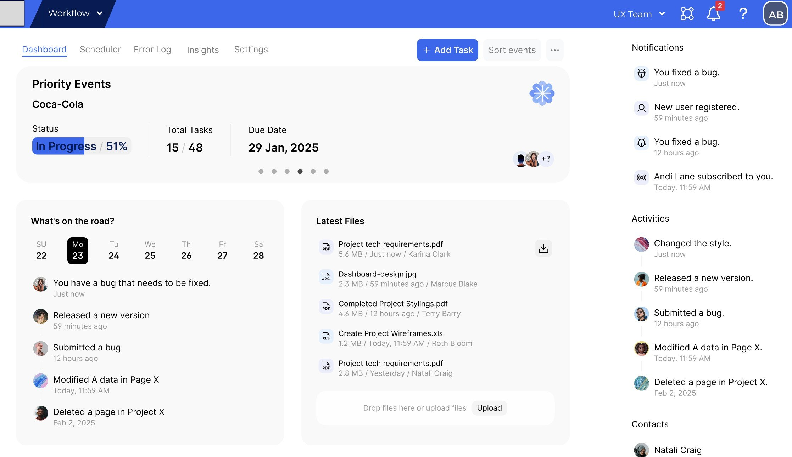
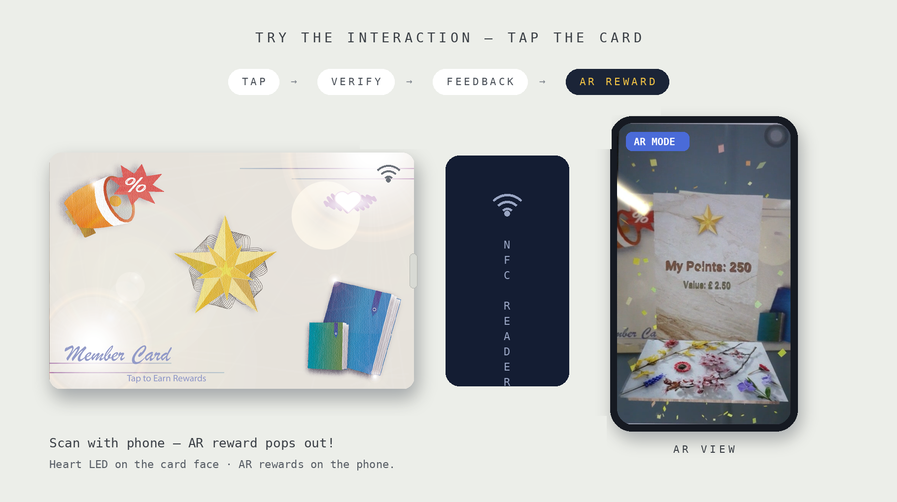
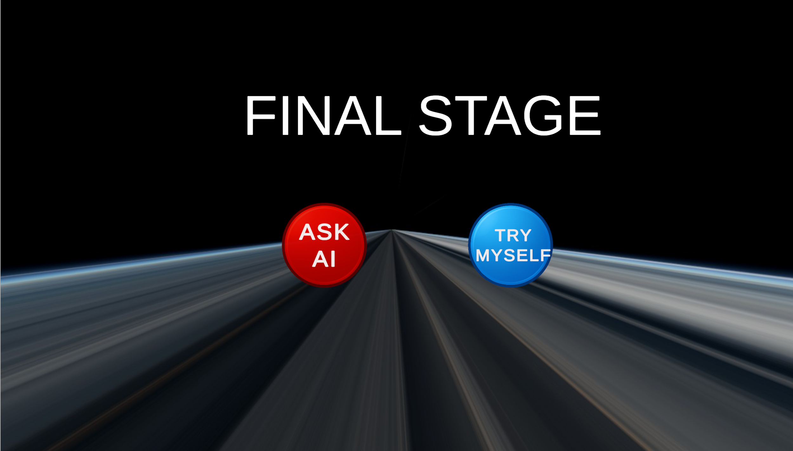

Making complex data feel effortless.
I'm a data-driven designer pairing eight years of analytics and stakeholder work with an MSc in Digital Design. I turn dense, high-stakes information into interfaces people actually want to use.
Case Studies
Schedulink
Team of 5 · Research through Design · 2025
A task scheduler system that cooperates with Anaplan — consolidating fragmented scheduling tools into one interface, tested to a SUS of 82.1.
ACCESSIBILITY

FIGMA
USER RESEARCH
USABILITY TESTING
Beyond the App
Solo · Product Design · 2025
Supermarket apps exhaust the users they reward. I built a card you simply tap — and tested it with the people it's for.
UX RESEARCH
HARDWARE PROTOTYPING

TANGIBLE INTERACTION
AUGMENTED REALITY
The AI Dependency Trap
Solo · Speculative Design · 2025
AI can give you every answer. This game asks what happens when you over-rely.

DESIGN FICTION
GAME DESIGN
CREATIVE EXPLORATION
UNITY